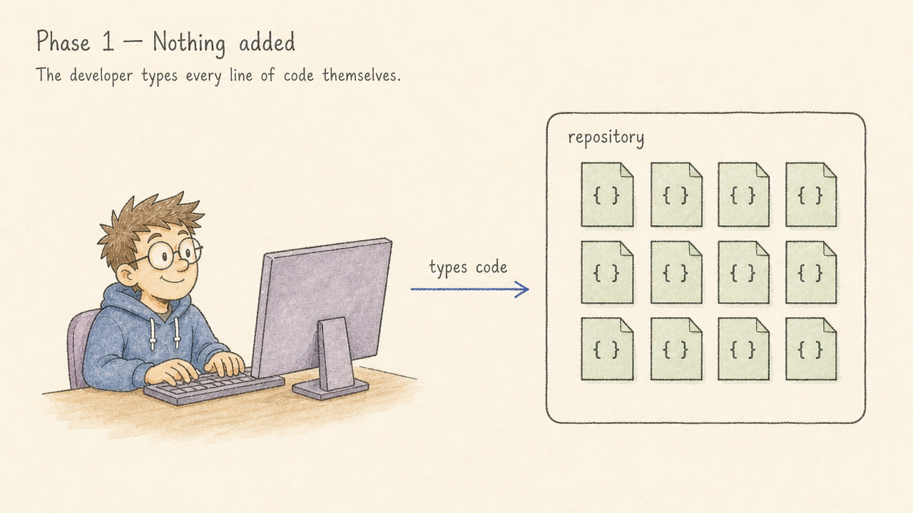
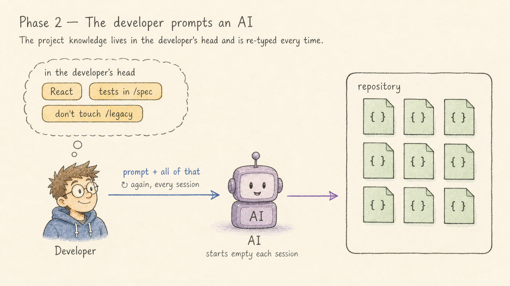
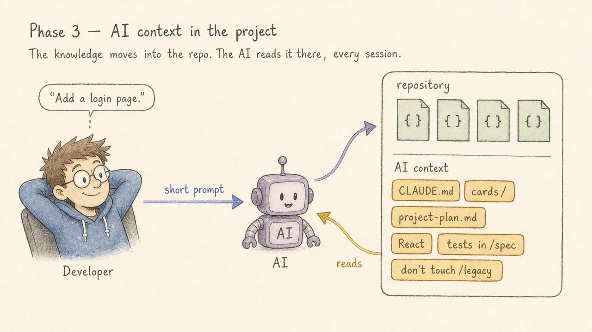
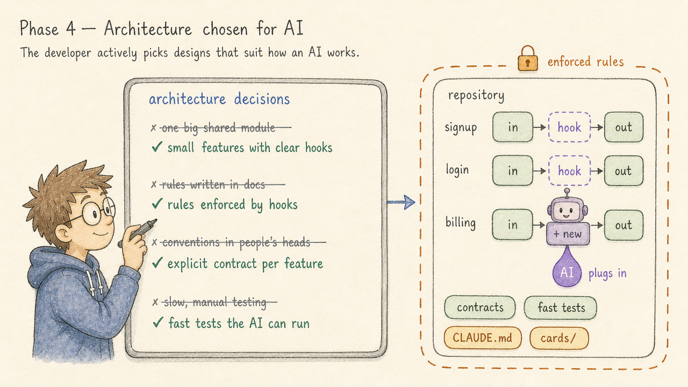
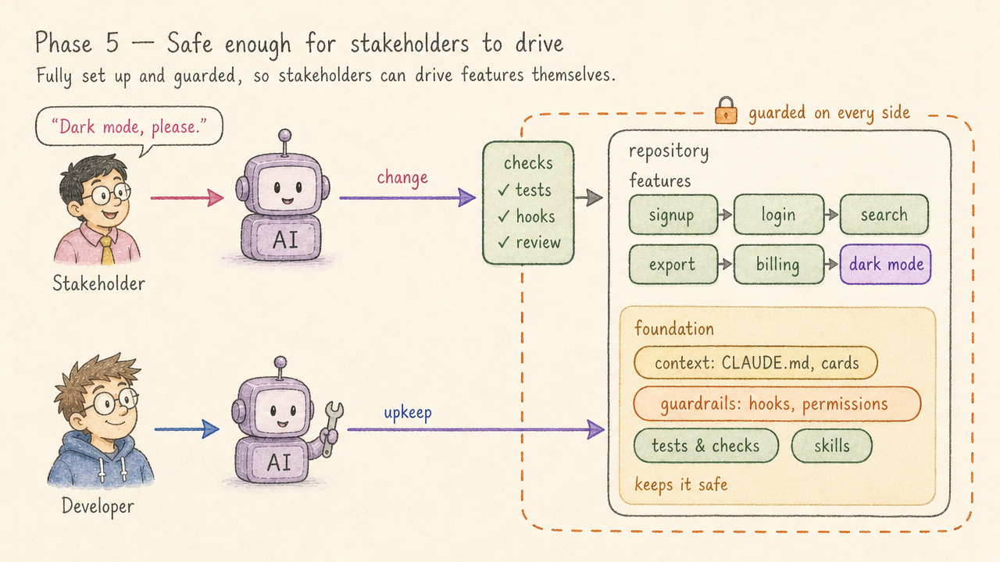

The Five Phases of AI Adoption in a Project
Most teams don't decide to "adopt AI" in one go. It happens gradually, and the project itself changes along the way. I think of it as five phases. Each one changes who touches the code, what touches it, and what the developer spends their day on.
From what I see, most teams are in phase 2 today. Some have reached phase 3. Phases 4 and 5 I have yet to see in practice; few dare to go there yet. So read the first three as a map of where teams are now, and the last two as where I think this is heading.
1Nothing added

This is where every project starts. The developer types every line of code themselves. Maybe there's autocomplete in the editor, but nothing in the project knows or cares that AI exists. The repository holds source code and nothing else.
There's nothing wrong with this phase. It's just the baseline.
2The developer writes prompts that edit the project

Now an AI sits between the developer's hands and the code. The developer describes a change, the agent makes it, and the developer reviews the result.
The catch is that all the context lives in the developer's head and has to be typed again in every prompt. Each session starts from zero: "We use this framework, tests are run like this, don't touch that folder…" It works, but it doesn't scale, and the quality of the output depends on how well the developer remembers to explain things that day.
3AI context is scaffolded into the project

The obvious fix for phase 2 is to write the context down in the project. The repository now holds a small set of documents written for the agent, not for humans: what the project is, how to build and test it, conventions, and the things that are easy to get wrong.
In practice this means files like:
CLAUDE.md/AGENTS.md: the project overview, the commands, and an index of where to find more.- Context cards (
cards/): small, lazy-loaded notes the agent reads only when the situation calls for them, so the main file stays short. project-plan.md: one shared file with the goal, non-goals, milestones, decisions and current state, which every agent session reads and updates.- Standing defaults: decisions made once (e.g. "always use a Python venv") so they aren't debated again in every session.
The code hasn't changed yet. What changed is that the agent now starts every session already knowing the project. Prompts get shorter, and the results get more consistent.
The setup page has a read-only checker, check-agent-docs.py, that flags broken @ imports, dead or missing card index entries, and files that have grown too large. It changes nothing.
4The project is architected for agentic tools

From here on, we're looking ahead. I haven't seen a team fully here yet, but the pieces exist today. In phase 3 the documentation adapted to the agent. In phase 4 the developer starts choosing the architecture for it. Whenever there's a design decision to make, the option that suits how an AI works wins, even if it's not the one you'd have picked for a human-only team.
Each of these is a deliberate trade, made because it lets an agent read and change the code safely:
- Feature-first architecture: features are documented as pipelines of named steps with clear hook points, so an agent can add behaviour without having to understand the whole system.
- Per-feature
CLAUDE.mdfiles, split into a short overview and a full contract (CLAUDE_full.md) once they grow too long. - Hooks over prose: mechanical "always/never" rules move out of the documentation and into
.claude/settings.jsonpermissions and hooks. The harness enforces them, so the agent doesn't have to remember them. - Project-scoped skills in
.claude/skills/: repeatable workflows (refactoring, reviews, releases) checked into the repo, so every collaborator and worktree gets them. - Fast tests the AI can run: a quick, reliable test suite is how an agent checks its own work before you ever look at it.
The guiding idea is that a well-structured project gives an agent less room to make mistakes. Clear boundaries, enforced rules and documented extension points help human developers too.
5The developer stops adding features

This is the phase that changes the role, and the one that takes the most nerve. It only works once the project is fully set up and safe: the context is complete, the rules are enforced by hooks and permissions, and every change passes tests and review on its way in. When a project is guarded that well, the people who want features can drive them directly. A stakeholder works with their own AI session against the same project, inside the same guardrails, and features come out the other end. Few projects have earned that level of trust yet.
The developer doesn't disappear. They move to the other lane. Their AI now points at the AI layer and the project's health:
- keeping the context documents and cards accurate as the code changes,
- tightening hooks and permissions when an agent does something it shouldn't,
- refactoring where the structure has started to drift,
- improving the tests and checks that let stakeholder-driven changes land safely,
- reviewing and auditing the agentic setup itself.
In short, the developer stops being the bottleneck for features and becomes the steward of the system that produces them.
Where is your project?
A quick way to place a project:
| Phase | Signal |
|---|---|
| 1 | No AI tooling touches the repo |
| 2 | You use an agent, but you explain the project again in every prompt |
| 3 | There's a CLAUDE.md/AGENTS.md and the agent "knows" the project |
| 4 | Architecture decisions are made with the agent in mind |
| 5 | The project is safe enough that non-developers ship features; developers mostly work on its health |
You don't have to rush through them, and different parts of a codebase can be in different phases. If you're in phase 2, you're in good company: that's where most teams are. Phase 3 is the step almost any team can take today, and each step makes the next one possible. Phase 5 doesn't work without the context of phase 3 and the guardrails of phase 4.